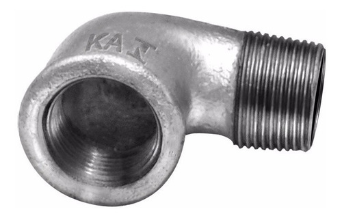

Tubo de Aço Galvanizado com Rosca
$ $
O tubo galvanizado com rosca é usado em diversas funções e em diversos setores, como a construção civil, quando relacionado ao processo de edificação e estruturação, bem como na condução de fluidos e encanamentos de gás, Instalações de Incêndio,além de serem muito úteis no setor elétrico com a missão distribuída dentro de redes de energia em postes elétricos e máquinas industriais.

Bucha de Redução
$ $
Conexões galvanizadas são aplicadas para a condução de água, gás, vapor, óleo e outras aplicações hidráulicas em geral.
Bujão (Plug)
$ $
Conexão de ferro maleável revestido com uma camada de zinco para proteção contra a corrosão conforme ABNT NBR 6590, ISO 5922 e EN 1542

Contra Porca
$ $
a contraporca serve como um elemento de travamento para o aperto da porca principal com o fixador. É uma porca de perfil baixo. O modelo mais conhecido como contraporca é a Porca Sextavada Baixa DIN 439 B.

Cotovelo 45º Galvanizado
$ $
Conexões galvanizadas são aplicadas para a condução de água, gás, vapor, óleo e outras aplicações hidráulicas em geral.

Flange
$ $
Conexões galvanizadas são aplicadas para a condução de água, gás, vapor, óleo e outras aplicações hidráulicas em geral.
Luva
$ $
A conexão luva de união galvanizado é uma conexão com rosca interna. A luva de união galvanizado é bastante utilizada em sistemas hidráulicos prediais e industriais, para fluídos líquidos, gasosos e vapores, devido à sua alta resistência à corrosão.

Luva de Redução
$ $
É uma tubulação que serve para escoar a água excedente, utilizado na instalação de caixas acopladas de privadas e caixas d'água.
Cotovelo 90°
Cotovelo é um cano curto e curvo em formato de "L", com ângulo em 90°, 45° ou 60°, utilizado para criar curvas em tubulações hidráulicas e, por extensão, nas demais tubulações.
Cotovelo de Redução
Cotovelo é um cano curto e curvo em formato de "L", com ângulo em 90°, 45° ou 60°, utilizado para criar curvas em tubulações hidráulicas e, por extensão, nas demais tubulações.

Cotovelo Macho/Fêmea
Cotovelo é um cano curto e curvo em formato de "L", com ângulo em 90°, 45° ou 60°, utilizado para criar curvas em tubulações hidráulicas e, por extensão, nas demais tubulações.

Cruzeta
A peça "Cruzeta" serve, basicamente, para criar uma derivação na tubulação ou para fazer a ligação entre os tubos, pode ser aplicada nos mesmos lugares que os tubos PEAD
Niple
Os Niples são usados para ligação de tubos ou de conexões. Costuma-se dizer que o niple é o negativo da luva, pois ele normalmente conecta dois elementos fêmea.
Niple de Redução
Os Niples são usados para ligação de tubos ou de conexões. Costuma-se dizer que o niple é o negativo da luva, pois ele normalmente conecta dois elementos fêmea.
Tampão (Cap)
Utilizado para finalizar ou dar uma pausa na tubulação que termina com rosca macho. Pode ser usado na condução de água, vapor, óleo e outras aplicações hidráulicas em geral.
Tee
Emenda t para mangueira que podem fazer a conexão de até três lances de mangueiras para uma mesma rede de ar comprimido no intuito de distribuir.
Curva Fêmea 90º
Utilizada para efetuar um desvio longo em 90 graus nas tubulações, conectando uma rosca macho a uma fêmea. Pode ser usada na condução de água, vapor, óleo e outras aplicações hidráulicas em geral.
Curva Fêmea 45º
Utilizada para efetuar um desvio em 45 graus nas tubulações, conectando uma rosca macho a uma fêmea. Pode ser usada na condução de água, vapor, óleo e outras aplicações hidráulicas em geral.
Curva Macho 90°
Utilizada para efetuar um desvio em 90 graus nas tubulações, conectando uma rosca macho a uma fêmea. Pode ser usada na condução de água, vapor, óleo e outras aplicações hidráulicas em geral.
Curva Macho/Fêmea 90°
Utilizada para efetuar um desvio em 90 graus nas tubulações, conectando uma rosca macho a uma fêmea. Pode ser usada na condução de água, vapor, óleo e outras aplicações hidráulicas em geral..
Tee de redução
Emenda t para mangueira que podem fazer a conexão de até três lances de mangueiras para uma mesma rede de ar comprimido no intuito de distribuir.
União Assento Bronze
Utilizado para conectar duas roscas macho. Sua principal utilização, são nos locais onde poderão necessitar reparos ou manutenções futuras. A união se divide em 3 partes, possibilitando a remoção de válvulas e registros, sem a necessidade de cortes na tubulação.

União Assento Plano
Utilizado para conectar duas roscas macho. Sua principal utilização, são nos locais onde poderão necessitar reparos ou manutenções futuras. A união se divide em 3 partes, possibilitando a remoção de válvulas e registros, sem a necessidade de cortes na tubulação.
Tubete para Hidrômetro
conexão utilizada juntamente com a porca e o anel para conectar o hidrômetro no suporte ou quadro cavalete.